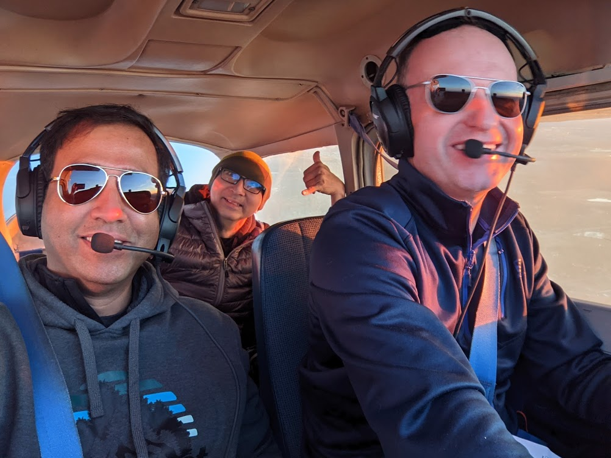
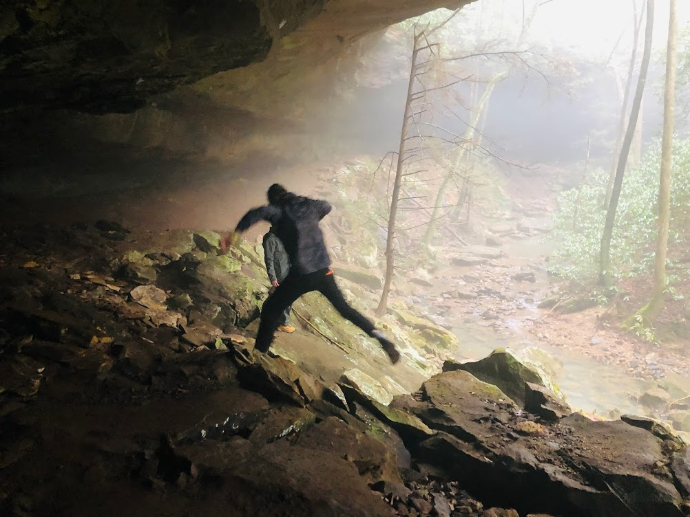
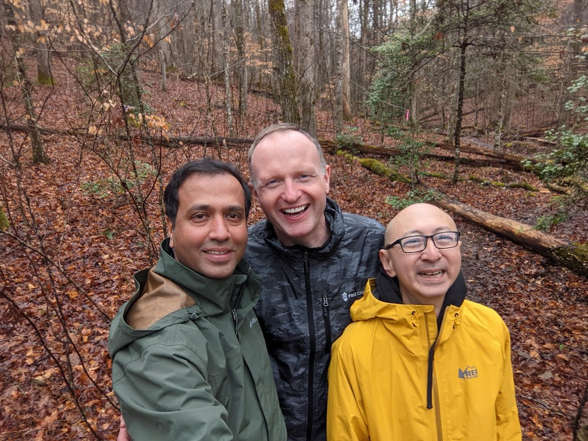
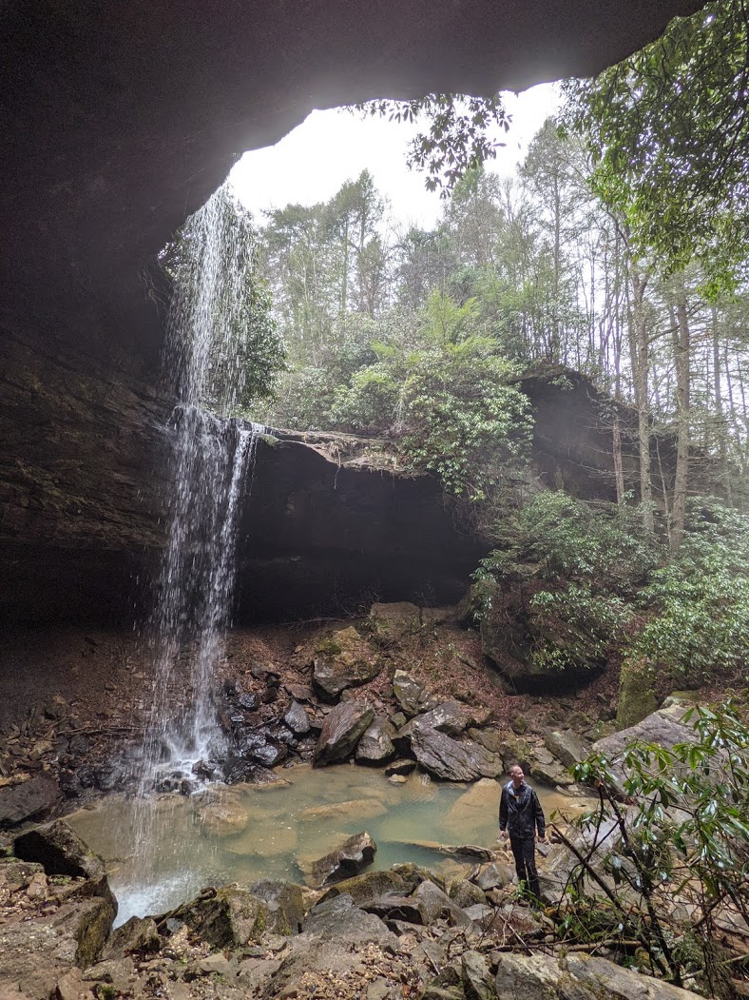

IMC in London, KY
On March 12th, we flew to Kentucky. Originally, we planned to fly to Knoxville, Tennessee however IMC conditions prevented safe flight to our intended destination. We landed earlier - at KLOZ - and stayed overnight in London, KY. Curtesy of AllTrails, we found an amazing hike to “Pine Island Double Falls”.




